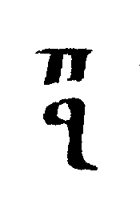

������ ���� / First Mode
���������� / Reference
Εισαγωγή
Introduction
The most popular
mode and one of the richest in variety
in the whole of Ecclesiastical Music.
Most Greek traditional folk songs are in this mode.
Traditionally (but not always) a joyful mode, used to express joy, pride, excitement
and more.
Βάση ήΊσον(Παραγωγή
ήχου)
Base or Ison (Mode Production)
It is called
First mode because it is the first mode we
find when
stepping up one (major tone) interval from the
mode production basis.
In the following example, we hear how the mode is found, bystepping up one
note from Νη to find Πα.
listen (Emmanouilidis, Νη (Νε) - Πα (Νε))
One note (
major tone interval) up from
Δι
(the second
mode production basis) we find
Κε, the other basis of
First mode.
When the basis is
Ke, the mode is more accurately
called
high (έξω/ekso) First mode
.
In the following example, we hear how the mode is found, by stepping up one note
fromΔι to find Κε.
 listen (Stanitsas, Δι (Νε) - Κε (Νε))
listen (Stanitsas, Δι (Νε) - Κε (Νε))
In the old days (before
1814) when there was no
Πα, Βου, Γα, Δι ...
, First mode was called
Ananes and the psaltai would use a relatively high pitch note as its basis. Something like this:
The reason why we have high First mode (from Κε) nowadays
is because many old pieces
still assume that the chosen basisshould behigh enough for the voice
to comfortably reach lower notes
as the melodies descend from the basis of First mode (Κε)
to its Plagal (First Plagal from Πα).
But more on that later.

Αρκτική Μαρτυρία
Starting sign/Mode indication
Note: The indication sign
q is a calligraphic
a meaning "first" in Greek.
Low first mode (from Πα)
S. Karas gives the following
martyria for this mode
However in most printed books the
oxeia is not there

And even more often the
fthora is not there either, it is implied.
Sometimes for brevity, the
ypsele is omitted too.

And even simpler
(e.g. in Anastasimatarion Ioannou, publ. by Zoe)

High first mode or First mode Tetraphonos (from Κε)
Again,
S. Karas gives the following
martyria for this mode
However, in most printed books the
oxeia is not there
And even more often the
fthora is not there either (as it is implied)
D. Panagiotopoulos gives this sign also for this mode.
It indicates a four note ascend from the basis of its
Plagal
(see the definition of
Tetraphonos).
Απήχημα
Apechema
Κλίμακα
Scale
Assuming the basis is Πα. The same intervals apply when the basis
is Κε.
Only the names of the notes (and implicitly the pitch) change.
According to the Octachordon system
A diatonic tetrachord (of the type of First mode)
Πα 10 Βου 8 Γα 12 Δι
joined to another diatonic tetrachord (of the type of Fourth mode Agia)
Δι 12 Κε 10 Ζω 8 Νη
plus an additional major tone
Νη 12 Πα
which gives the following succession of intervals
10-8-12 12-10-8 12
view| listen
According to the Pentachordon system
A diatonic tetrachord (of the type of First mode)
Πα 10
Βου 8
Γα 12
Δι
12
Κε
which gives the following succession of intervals
10-8-12-12
Σύστημα
System
Octachordon
... 10-8-12 12-10-8 12
10-8-12 12-10-8 12 10-8-12
12-10-8 12 ...
... 10 8 12 12 10 8 12 12
10 8 12 12 10 8 12 12 ...
view| listen
Συγγενείς ήχοι
Related modes
Modes that usually occur in compositions of First mode:
Fourth Plagal from Νη
Fourth Agia from Δι
score | listen
First Plagal Pentaphonos (so called Enarmonios) from
Πα
score | listen
Second Plagal from
Πα
Fourth Legetos from Βου
Φθορές
Fthorai
The diatonic ones..
Δεσπόζοντες
Φθόγγοι
Dominant notes
Heirmologic..
score | listen
Sticheraric..
score | listen
Papadic...
score | listen
Καταλήξεις
Cadences
Heirmologic.
score | listen
Sticheraric..
score | listen
Papadic...
score | listen
Έλξεις
Melodic attractions
Heirmologic..
GA => ΔΙ
score | listen
Sticheraric..
BOU => GA
score | listen
GA=> ΔΙ
score | listen
ΔΙ => GA
score | listen
Νη' => PA'
score | listen
....
Μέσος ήχος
Mesos mode
Protovarys (Varys Pentaphonos) ...
Παράμεσος ήχος
Paramesos mode
Plagal First mode from low Ke
(Chrysanthos, $348)
Πλάγιος Ήχος
Plagal mode
First Plagal mode...
score | listen
Αντίφωνος ήχος
Antiphonos mode
First mode from low KE..
score | listen
First mode from low PA...
score | listen
Δίφωνος ήχος
Naos, Maqam Sabah
score | listen
Τετράφωνος ήχος
High First Mode (from Ke)
score | listen
Πεντάφωνος ήχος
With permanent Ζω flat.
score | listen
Επτάφωνος ήχος
Heptaphonos mode
Leitourgika...
Behaves as both Plagal and Authentic mode...
Επείσακτα μέλη
Hepeisakta mele
"Ton Tafon sou Swtir"... (chanted in Second mode)
Ίσον
Ison
PA when in First mode from PA
score | listen
ΔΙ, when in Agia
score | listen
KE when in First mode from KE
score | listen
Νη when in Fourth Plagal
Στίχος
Verses
Heirmologic:
Fast
Slow
Sticheraric:
Fast
Είδη μελοποιείας
Composition styles
Heirmologic:
Fast
Slow
Sticheraric:
Fast
Papadic:
Mathemata..
score | listen
Kalophonic..
Προσόμοια
Prosomoia
"Ton Ouranion Tagmaton.."
"O tou paradoksou Thavmatos.."
score (
fast) | listen
score (
slow) | listen
"Vavai.."
score (
fast) | listen
score (
slow) | listen
"Tou Lithou Sfragisthentos..."
("Tis Eremou Politis..")
score | listen
...
Σχετικός Αρχαίος
Ελληνικός Ήχος
Related Ancient Greek Mode
Dorian...
Σχετικός Ανατολικός
Δρόμος (Μακάμ)
Related Eastern maqam
Dugah, Ussak, Muhayer, Beyati, Sabah ...
Παρατηρήσεις
Notes
The melodic attraction GA => ΔΙ has beenoverdone...
score | listen
Isonchanges have been overdone..
First Mode from PA,can getconfused with First Plagal
(e.g. Osoi eis Xriston, Douloi Kyrion..)
Ερωταπαντήσεις
Questions and Answers
Q) I noticed that the slow communion hymn
by St. John Koukouzelis "Aineite" is in plagal first tone according to Angelopoulos,
but in Hieromonk Ierotheos' book it is in first tone. Who is right? And more importantly,
how can you distinguish between the papadic versions of the two tones?
A) See the
Idioms section of this mode.
Βιβλιογραφία
Bibliography
Chrysanthos..
Epitropi...
Boudouris...
Panagiotopoulos..
Karas..
Konstantinou...
...
{kind=link}
{kind=link}
{kind=link}
{kind=link}
{kind=link}
{kind=link}
{kind=link}